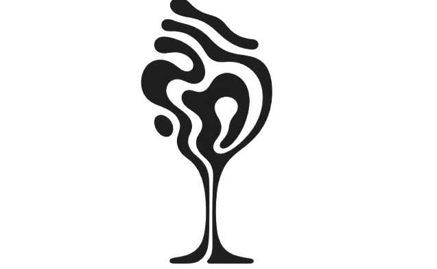
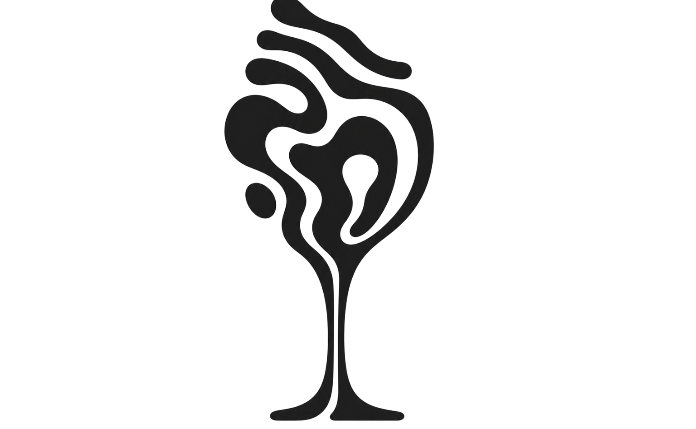

A precisão do laboratório revelando a essência mais pura e indomável da terra.
Nós não fabricamos bebidas; nós induzimos reações ecológicas em ambientes controlados. Cada garrafa de Padrino é o resultado de uma tensão meticulosamente calculada entre a ciência da destilação e a imprevisibilidade dos elementos crus.
Nossos laboratórios são apiários integrados e estufas escuras. Nossos instrumentos são favos de mel cru, caldos em fermentação selvagem, madeiras, raízes e o tempo. Do despertar do hidromel à purificação da cachaça, buscamos a imperfeição perfeita, catalogando os resultados como registros biológicos de um ecossistema engarrafado.

ESTÁGIO:
ESTÁGIO: